1987
Ford simulator
An advertisement program/game for Ford vehicles
Play date: 1987
Publisher: Ford Motor Company
Memo: Accelerating just forward, asking about why shifting?
Description: The Ford Simulator is an advertisement program/game for Ford vehicles. It allows you to drive any of their 1987 vehicles, and choose what features you would like on them to determine what your monthly payment would be. You can also submit a form (by printing one out) to request additional information on each car.


1988
Hungaroring
Formula-1 autóverseny on the TVC hungarian platform
Play date: 1988
Publisher: Octasoft
Memo: TVC Joystick killer game
Description: Formula-1 autóverseny on the TV-Computer hungarian platform.
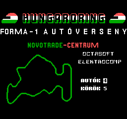
1988
Grand Prix Circuit
Developed by Distinctive Software and published by Accolade for MS-DOS compatible OS
Play date: 1988
Developer: Distinctive Software
Publisher: Accolade
Memo: Suzuka tunnel
Description: Grand Prix Circuit is a racing video game developed by Distinctive Software and published by Accolade for MS-DOS compatible operating systems in 1988. It was ported to the Amiga, Amstrad CPC, Apple IIGS, Commodore 64, and ZX Spectrum. Players can choose from three different cars in the game. They are: McLaren MP4/4 (Honda 1.5L V6 turbo - 790 bhp (589 kW; 801 PS)), Williams FW12C (Renault 3.5L V10 - 735 bhp (548 kW; 745 PS)), and Ferrari F1/87/88C (Ferrari 3.5L V12 - 680 bhp (507 kW; 689 PS)).
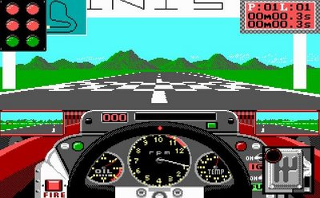

1989
The Cycles
Based on Grand Prix Circuit's engine. Was revolutionary for its time: it was the only motorcycle game at the time with a 1st person perspective
Play date: 1989
Developer: Distinctive Software
Publisher: Accolade
Memo: -
Description: Based on Grand Prix Circuit's engine, The Cycles was revolutionary for its time: it was the only motorcycle game at the time with a first-person perspective. Accolade continues its strong point in graphics, as turns are depicted realistically and the animations of other racers are very smooth. Choose from 5 skill levels, then compete in 3 performance classes (500, 250, or 125cc) in the world's most grueling courses that range from Australia to Brazil. Another forgotten classic that reaffirms Accolade as the premier developer of sport games.


1989
Indianapolis 500: The Simulation
The famous Indianapolis 500 Mile race, held annually at the Indianapolis Motor Speedway on the Memorial Day weekend, is one of the most famous automobile racing events in North America.
Play date: 1989
Developer: Papyrus
Publisher: Electronic Arts
Memo: Crashes, reverseway, dotted crowd, TV.
Description: The famous Indianapolis 500 Mile race, held annually at the Indianapolis Motor Speedway on the Memorial Day weekend, is one of the most famous automobile racing events in North America. The event is simulated here using 3D polygon graphics to recreate the 33 cars in the race. Players are able to choose their car and customize it with a variety of options. Modifications include wing down-force, tire pressures, wheel stagger (making the right-side wheels larger, to compensate for the banked corners) and turbo output (which provides boost, but stresses the engine and uses more fuel). After qualifying (by performing during four laps and taking the average), players can race over 10, 30, 60 or the full 200 laps. Lower modes remove car damage and the 'full-course yellow' system, the absence of these can make for repeat carnage including traffic collisions and huge pile-ups.


1989
Test Drive II: The Duel
In the sequel to Test Drive, the general idea of driving a car remained the same with pretty much similar visuals, however the game itself was enhanced in many areas.
Play date: 1989
Developer: Distinctive Software
Publisher: Accolade
Memo: Mum work, fuel up.
Description: Like the original Test Drive, the focus of The Duel is driving exotic cars through dangerous highways, evading traffic, and trying to escape police pursuits. While the first game in the series had the player simply racing for time in a single scenario, Test Drive II improves upon its predecessor by introducing varied scenery, and giving the player the option of racing against the clock or competing against a computer-controlled opponent.


1990
Stunts
The game places emphasis on racing on stunt tracks and features a track editor.
Play date: 1990
Developer: Distinctive Software
Publisher: Broderbund
Memo: Yellow indycar, track creations, collider bug.
Description: Stunts (also known as 4D Sports Driving) is a 3D racing video game developed by Distinctive Software and published by Broderbund in 1990. The game places emphasis on racing on stunt tracks and features a track editor. It is clearly influenced by the earlier arcade game Hard Drivin' and has many similar elements to the game Stunt Driver which was released the same year. The game is part of the 4D Sports series along with 4D Sports Tennis and 4D Sports Boxing.


1994
Nascar racing
NASCAR Racing is a 1994 video game developed by Papyrus Design Group and published by Virgin for the PC.
Play date: 1994
Developer: Papyrus
Publisher: Sierra
Memo: Lower graphics
Description: NASCAR Racing was released in the fall of 1994 for DOS personal computers. It featured more than 25 of the 40 regular drivers in the 1994 NASCAR Winston Cup season. Notable absences included Dale Earnhardt (who would go on to win the Winston Cup that year), Dale Jarrett, Kyle Petty and Darrell Waltrip, although the latter's brother, Michael, was included. The PlayStation version features 20 of the 39 regular drivers from the 1996 season.


 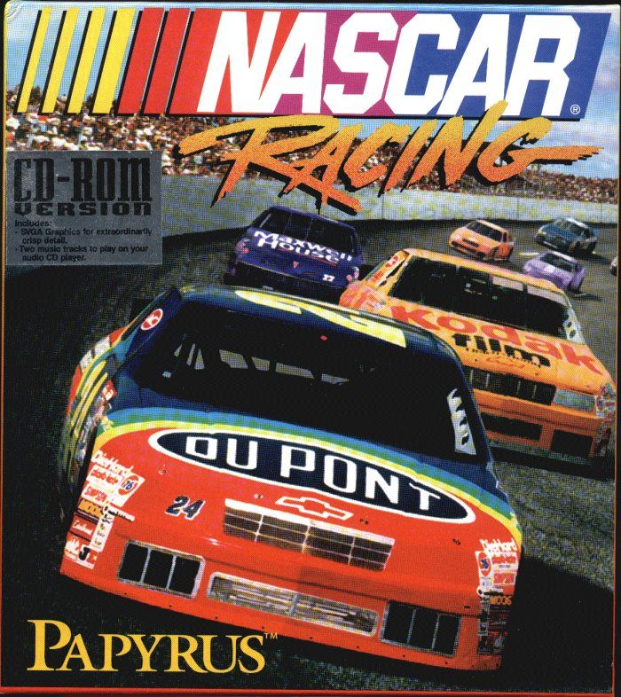
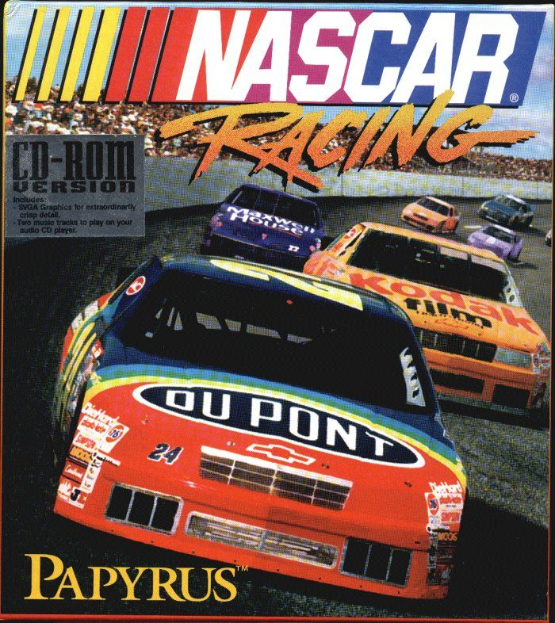
1993
IndyCar Racing
The game was intended as a realistic simulation of IndyCar's 1993 PPG Indy Car World Series.
Play date: 1993
Developer: Papyrus
Publisher: Papyrus
Memo: Custom class names, orders
Description: IndyCar Racing is a racing video game by Papyrus Design Group released in 1993.[1] Papyrus, consisting of David Kaemmer and Omar Khudari,[2] previously developed Indianapolis 500: The Simulation, released in 1989. The game was intended as a realistic simulation of IndyCar's 1993 PPG Indy Car World Series. The game featured a selection of the contemporary chassis and engines and eight circuits which could be raced individually or as part of a championship season. Subsequent expansion packs added a further seven tracks and, later, the Indianapolis Motor Speedway.


1995
Sega Rally Championship
Sega Rally Championship simulates driving on different surfaces, with different friction properties, with the car's handling changing accordingly.
Play date: 1995
Developer: Sega
Publisher: Sega
Memo: It's running...
Description: Sega Rally Championship is a 1994 racing game developed by Sega AM3 and published by Sega.[5] Originally released for arcades using the Sega Model 2 board, ports were published for the Sega Saturn in 1995 and Microsoft Windows in 1997. Sega Rally Championship simulates driving on different surfaces, with different friction properties, with the car's handling changing accordingly. As the first racing game to incorporate this feature, Sega Rally Championship is considered to be one of the milestones in the evolution of the racing game genre.[6] It was also an early rally racing game and featured cooperative gameplay alongside the usual competitive multiplayer.
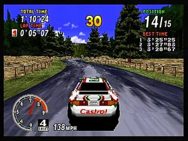


1997
MotoRacer
An arcade style motorcycle racing game developed by Delphine Software International and published by Electronic Arts
Play date: 1997
Developer: Delphine Software International
Publisher: Electronic Arts
Memo: Woah, what a rocket!
Description: An arcade motorcycle racer in which both superbike and motocross events are available. Game modes include Practice, Time Attack, in which players race against their own replays, Single Races against computer-controlled opponents, and a Championship Circuit. Network or Internet play for up to 8 players is available as well. Winning the championship unlocks additional courses out of the 4 road and 4 dirt tracks available, as well as the new game options Reverse and Pocket Bike. In Reverse mode the tracks are raced in the opposite direction, while in Pocket Bike mode every racer is given a miniature version of his motorcycle. A free track add-on extends the game with one additional course for sportbikes and dirtbikes each.
 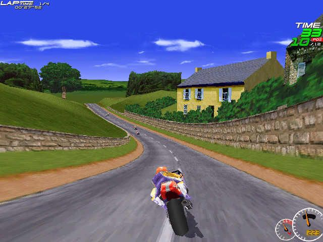
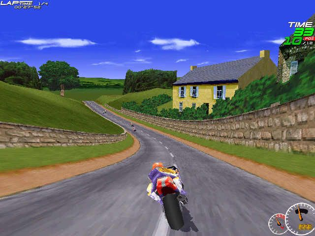


1998
Viper racing
Viper Racing combines both the easy-to-master arcade racing mode and the challenge of a serious simulation mode
Play date: 1998
Developer: Monster Games
Publisher: Sierra
Memo: Prodigy
Description: The first simulation of sports-car racing that features exclusively the Dodge Viper, one of the most popular racing cars on the road today. Viper Racing combines both the easy-to-master arcade racing mode and the challenge of a serious simulation mode with three levels of difficulty. A career mode is included to let you earn money to upgrade your car and move up through three different classes of the Viper racing league. Many tracks are included, along with replays, for reviewing races later, and a garage mode, for tweaking your setup. There are also hacks, including the ability to drive planes, but none of these are particularly useful, nor well-polished, except the 'exotic' car. (Most of the vehicle models are incomplete). Viper Racing's physics were very advanced for its time, and the AI, when set to hard, can even get into car-fights with you!
 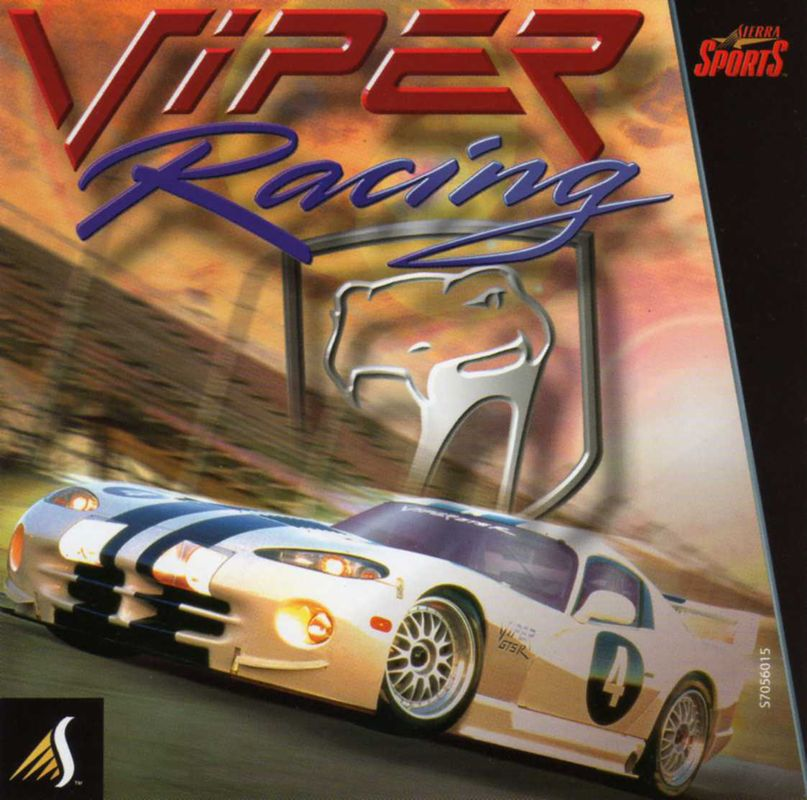
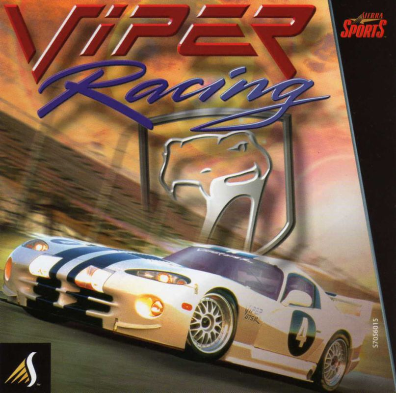
1998
Colin McRae Rally
Makers of Touring Car Championship comes Colin McRae Rally, a rally title hoping to knock V-Rally over
Play date: 1998
Developer: Codemasters
Publisher: Codemasters
Memo: 3dfx
Description: From the makers of Touring Car Championship comes Colin McRae Rally, a rally title hoping to knock V-Rally over.Codemasters has included an collection of fifty two tracks set over five countries including Greece, United Kingdom, Sweden and Australia. Colin McRae Rally also offers a selection of eight Rally vehicles with 4WD and 2WD vehicles. The game also offers a number of game modes including Championship, Rally, Time Trial, Rally School (learn the ropes from Colin McRae himself) and a two player mode.


2000
Rally Championship 2000
Mobil 1 Rally Championship (also known as Rally Championship 2000) is a rally video game which is part of the Rally Championship series
Play date: 2000
Developer: Magnetic Fields
Publisher: Actualize
Memo: wow intro
Description: This is the third rally simulation from Magnetic Fields and Europress (now renamed Actualize). This is a very realistic and highly detailed simulation which accurately recreates the Mobil 1 British Rally Championship. 36 tracks are available, all of which have been created by mapping the real life locations to create a highly accurate racing experience. There are also 22 rally cars to race in which have also been created from their real life counterparts. Although the name of the game is Mobil 1 British Rally Championship, it simply says "Rally Championship" on the front of the box and the game manual. Ignoring this little problem this game is an excellent addition to Europress' rally series and possibly the most realistic racing game ever.
 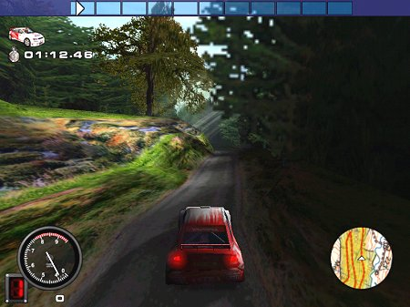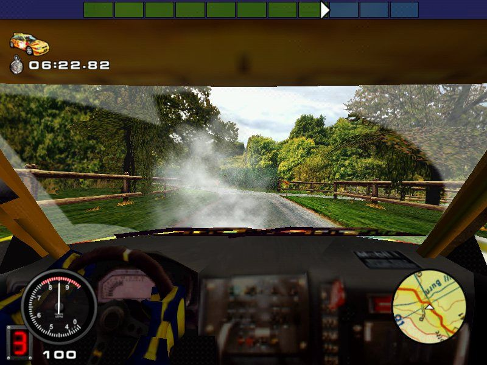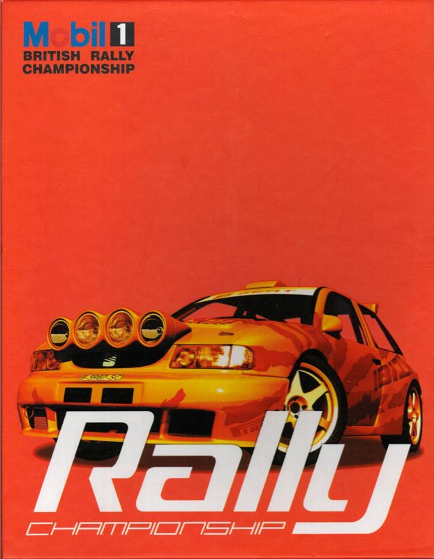
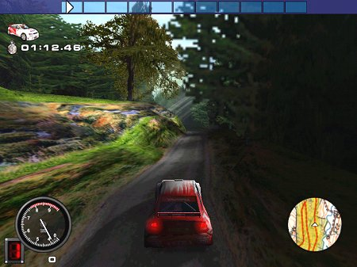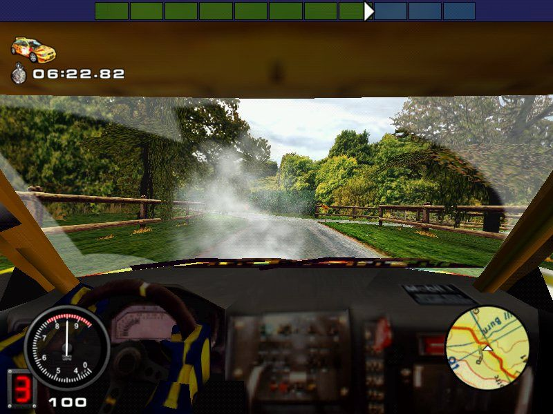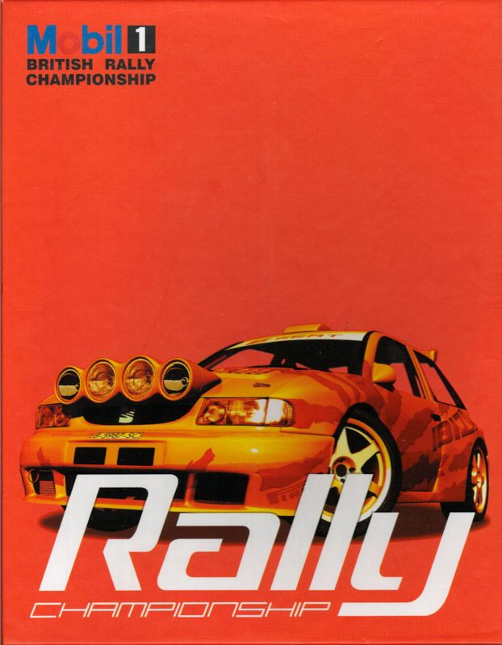
2000
Need for Speed: High Stakes
A racing game where players race exotic cars on various tracks set in North America and Europe
Play date: 2000
Developer: Electronic Arts
Publisher: Electronic Arts
Memo: best ost
Description: Just like its predecessors Need for Speed: High Stakes is an action racing game with a wide selection of exotic sports cars and many different types of tracks. The trademark Hot Pursuit mode game mode from the first game in the series is still present, where players race opponents on tracks filled with regular traffic and police cars that chase the racers. It is the first game in the series to introduce a Career mode with a set of challenges. Beating these is rewarded with trophies for unlocks, and money to spend on new cars, repairs and upgrades.
 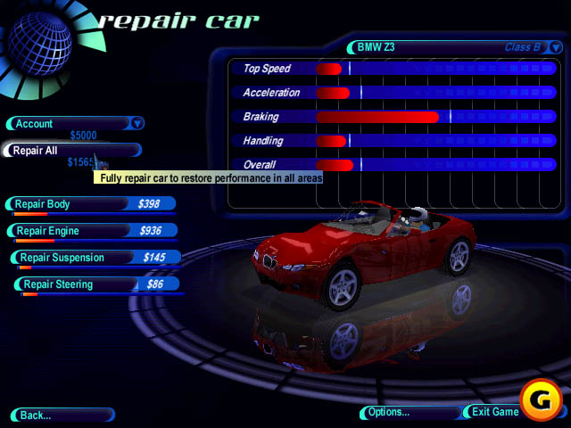
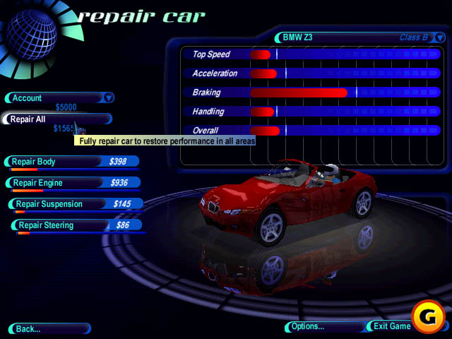
2000
Driver
Inspired by movie car chases, sees players driving around four real-life cities – Miami, SA, LA, NY
Play date: 2000
Developer: Reflections Interactive
Publisher: GT Interactive
Memo: best ost
Description: Just like its predecessors Need for Speed: High Stakes is an action racing game with a wide selection of exotic sports cars and many different types of tracks. The trademark Hot Pursuit mode game mode from the first game in the series is still present, where players race opponents on tracks filled with regular traffic and police cars that chase the racers. It is the first game in the series to introduce a Career mode with a set of challenges. Beating these is rewarded with trophies for unlocks, and money to spend on new cars, repairs and upgrades.
 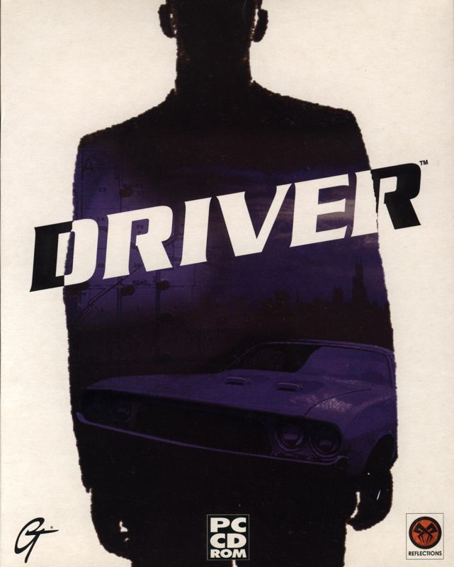
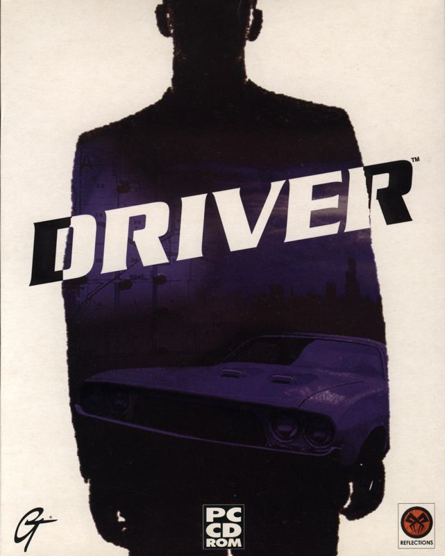2004
TOCA Race Driver 2
Codemasters returns to the racing fold once more with Race Driver 2
Play date: 2004
Developer: Codemasters
Publisher: Codemasters
Memo: cheat with trucks
Description: Codemasters returns to the racing fold once more with Race Driver 2. On this occasion, you can race your way through 15 different types of motorsport including the usual supercars and stock car types to the more unique rally, formula ford and supertruck types, plus much more. The single player career mode has you racing for pride through various championships from around the world, including the European ToCA and Australian V8 Supercars series, racing on tracks that will take you from Laguna Seca to Bathurst with another 20 cars maximum racing against you at any one time. You can then take to the online modes, racing with up to 12 other people through either your PC internet connection or Xbox Live.


2006
Trackmania Nations
Trackmania Nations ESWC is a free edition, specifically developed for tournament play
Play date: 2006
Developer: Nadeo
Publisher: Nadeo
Memo: korverseny, keyboard fail
Description: TrackMania is a modern version of Stunts, using basic controls and offering racing courses with tricky sections including loops, corkscrews, turbo blocks and huge jumps that require technical skill. In the single player mode, you can practice on 90 tracks, divided over three skills levels. Each race is associated with three time standards to be met to win a bronze, silver or gold medal. There is also a hot-seat multiplayer option where up to eight players can race against the time or with only one try.

 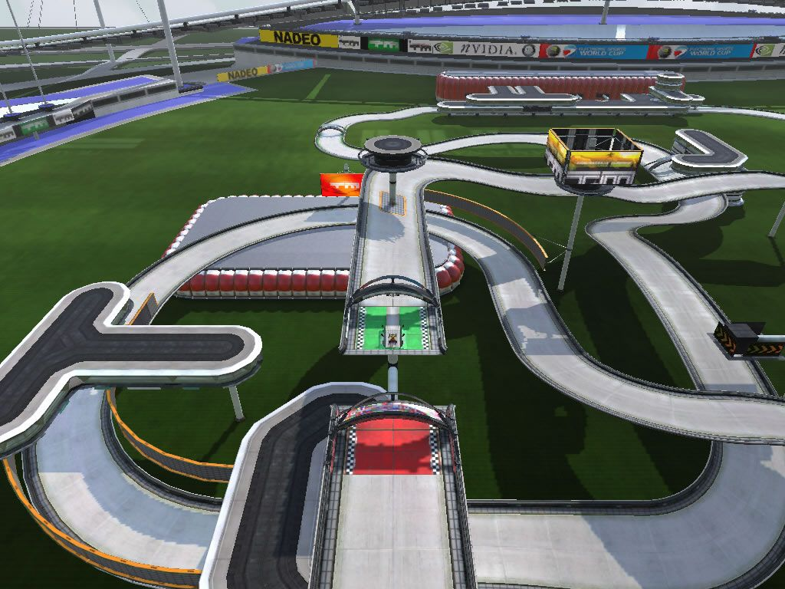
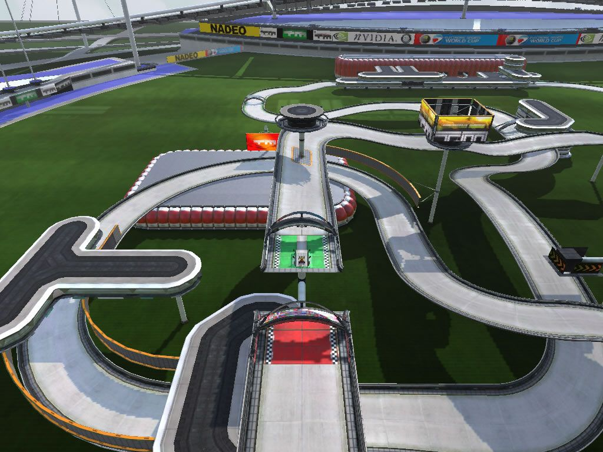2007
Test Drive Unlimited
Drivers are able to drive both on-road and off-road in free-roam mode
Play date: 2007
Developer: Eden Games
Publisher: Atari
Memo: korverseny, keyboard fail
Description: TrackMania is a modern version of Stunts, using basic controls and offering racing courses with tricky sections including loops, corkscrews, turbo blocks and huge jumps that require technical skill. In the single player mode, you can practice on 90 tracks, divided over three skills levels. Each race is associated with three time standards to be met to win a bronze, silver or gold medal. There is also a hot-seat multiplayer option where up to eight players can race against the time or with only one try.
 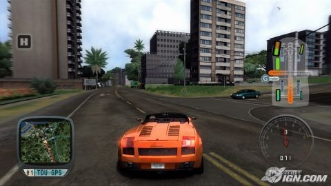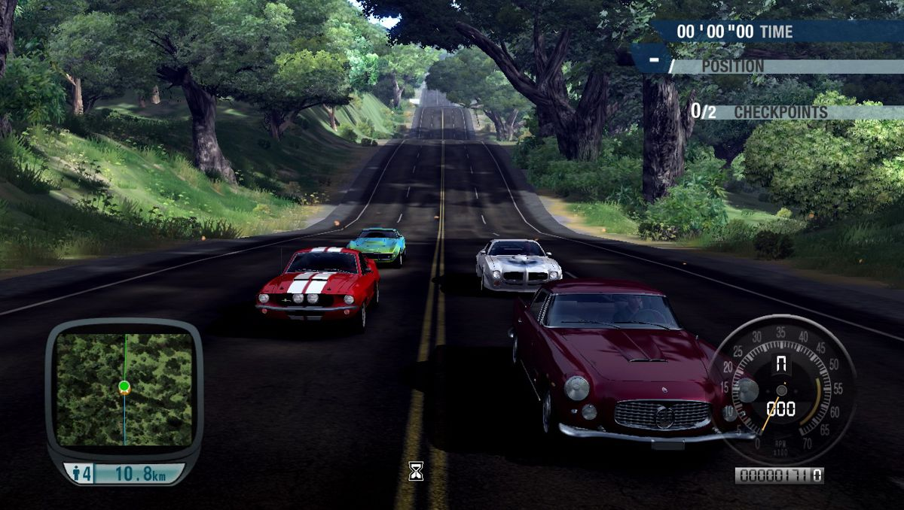
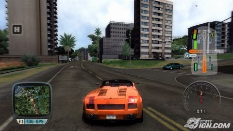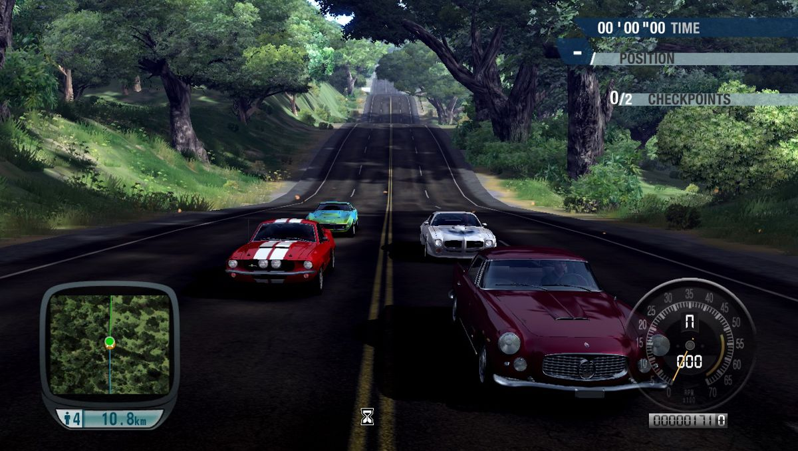